|
| หน้าแรก Home | วิธีการชําระเงิน | ติดต่อเรา |
|
|
|
||||||||||||||||||
|
|||||||||||||||||||
ร้านซ่อมและตัวแทนจำหน่าย อุปกรณ์ ตบแต่ง SRใกล้บ้านท่าน
|
บริการ รับออกแบบตกแต่ง SR และรับผลิตอะไหล่ตามแบบทุกรุ่นทุกยี่ห้อตามที่คุณต้องการ ของแต่งคุณภาพส่งออกราคาคนไทย 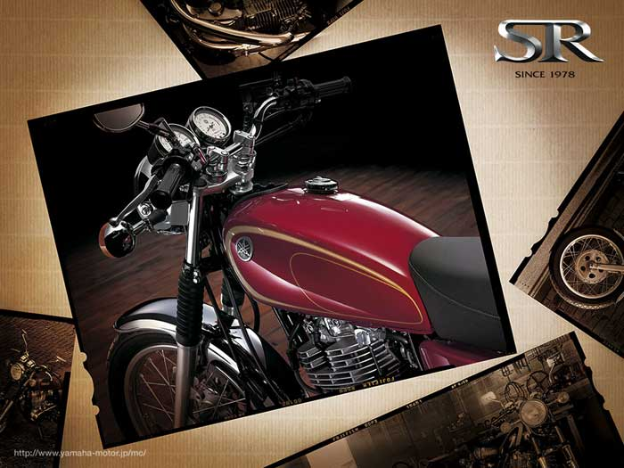 สำหรับร้านค้าร้านซ่อมที่สนใจเป็นตัวแทนจำหน่ายสินค้าของเราติดต่อได้ ยินดีให้คำปรึกษาครับ 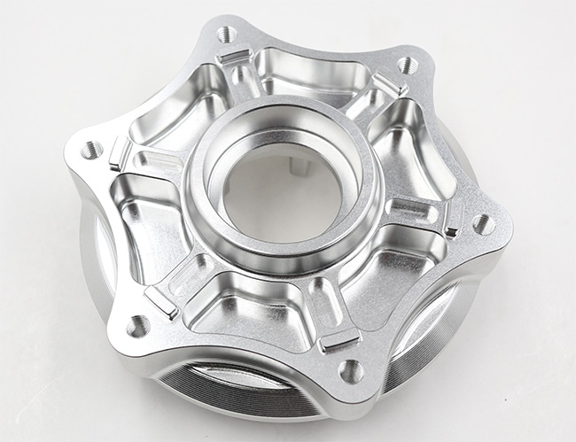
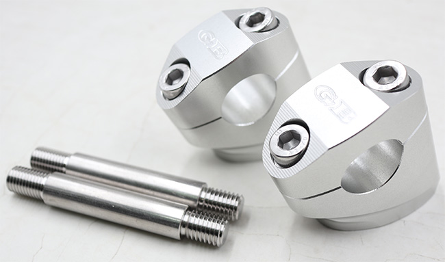 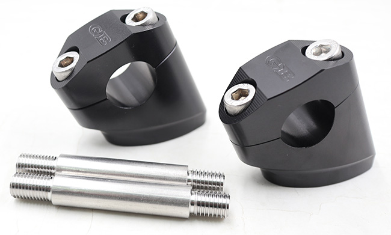 G.268 ตุ๊กตาแต่งแบบเยื้องใส่แฮนเท่าเดิม (22 mm.) พร้อมเสาแบบเป็นบู๊ท12มิลในต๊วใส่เข้ากับตุ๊กตาของแฮนเดิมได้เลย ผลิตจาก Aluminum Alloy CNC Billet (มีสี เงิน และ สีดำ) คู่ล่ะ 1,500 ฿ 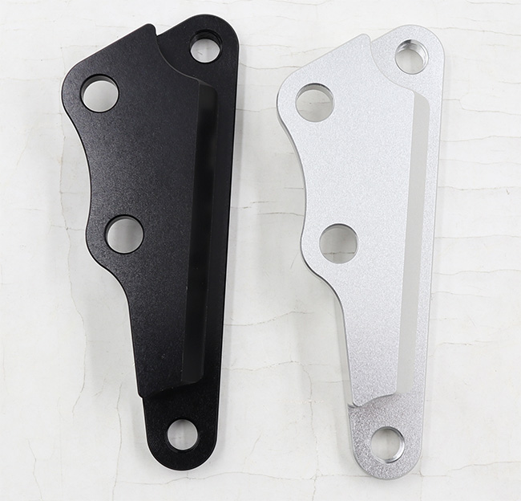 G.267 สเปเซอร์ยึดปั๊ม BREMBO 40mm. หูชิดใส่ SR,XS650 ข้างขวา ใส่กับโช๊ค SR 1978-2000 ใส่จาน 298-300 มม. Alloy CNC Billet (มีสี ดำ/เงิน) *ใส่คู่แผ่นรองจานหนา 11.5 มิล ชิ้นล่ะ 1200 ฿
G.266 สเปย์เซอร์รองจานเบรคใส่ดุมปีเก่า SR 1978 หนา 11.5 mm. ผลิตจาก Alloy CNC Billet มีีสี (ดำ-เงิน) ชิ้นล่ะ 700 ฿ 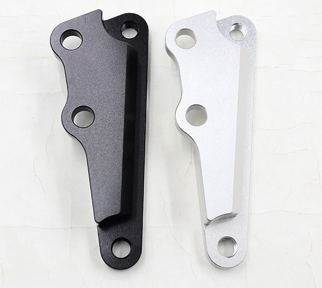 G.265 สเปเซอร์ยึดปั๊ม BREMBO 40mm. หูชิดใส่ SR,XS650 ข้างขวา ใส่กับโช๊ค SR 1978-2000 ใส่จาน 310 มม. Alloy CNC Billet (มีสี ดำ/เงิน) *ใส่คู่แผ่นรองจานหนา 10 มิล ชิ้นล่ะ 1200 ฿ 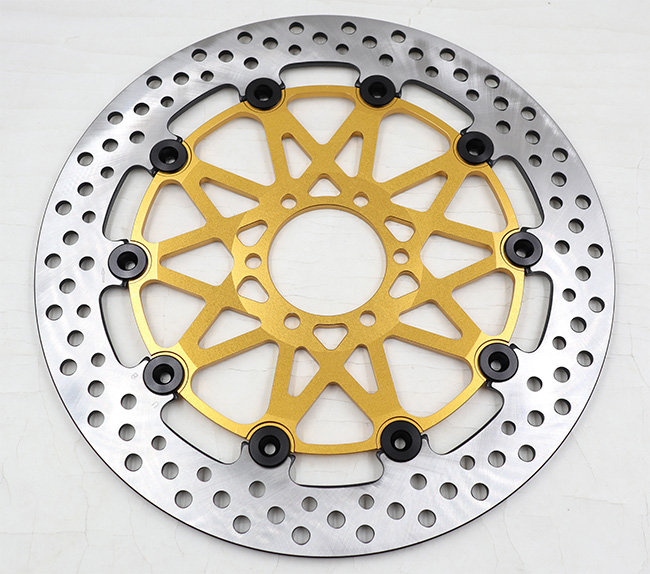 G.264 จานเบรคแต่งแบบก้านใขว้รูฉลุ ใส่กับดุมปีเก่า SR 1978 ขนาดจาน 310 mm. แผ่นจานเบรคเป็นของแท้อย่างดี ใส้จานผลิตจาก Alloy6061+Pins Alloy7075 CNC Billet (มีหลายสีหลายแบบให้เลือกตามต้องการ) *ใส้จานมีสี ดำ/ทอง/ฮาร์ด *หมุดจานมีสี ดำ,ทอง,แดง,เขียว,น้ำเงิน,ฮาร์ด ชุดล่ะ 6,800 ฿ 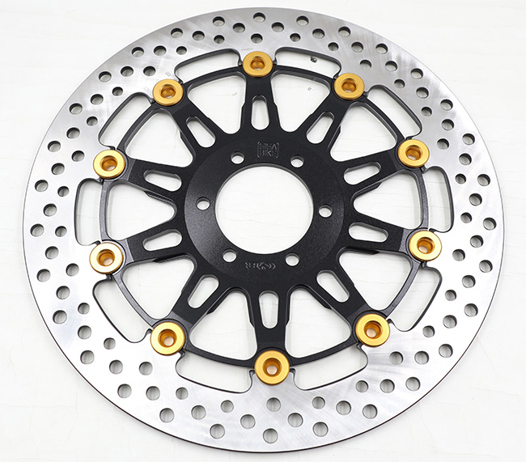 G.263 จานเบรคแต่งแบบก้านตรงรูฉลุ ใส่กับดุมปีเก่า SR 1978 ขนาดจาน 310 mm. แผ่นจานเบรคเป็นของแท้อย่างดี ใส้จานผลิตจาก Alloy6061+Pins Alloy7075 CNC Billet (มีหลายสีหลายแบบให้เลือกตามต้องการ) *ใส้จานมีสี ดำ/ทอง/ฮาร์ด *หมุดจานมีสี ดำ,ทอง,แดง,เขียว,น้ำเงิน,ฮาร์ด ชุดล่ะ 6,800 ฿ 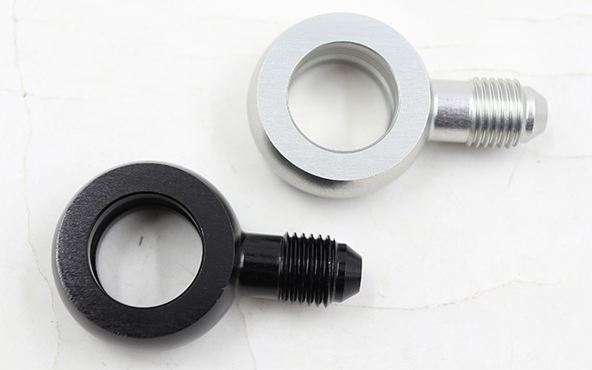 G.262 ห่วงออยล์ส่งน้ำมันเครื่องหัวเครื่อง SR ใส่กับสายดิสเบรกได้เลย ใส่แทนท่อฉีดน้ำมันเครื่องเลี้ยงแคมป์ งาน Alloy CNC Billet มีสี ดำ,เงิน อันละ 350 ฿ 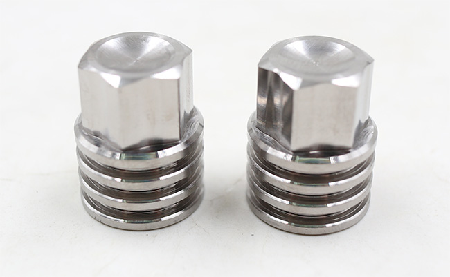 G.261 น็อตขันฝาครอบฝาสูบบนตรงที่ครอบมาร์คแคมป์ M8 SR ผลิตจาก titanium แข็งแรงทนทานช่วยระบายความร้อนได้ดีมากๆ คู่ละ 950 ฿ 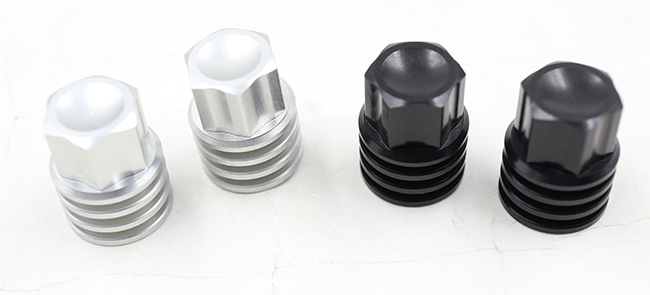 G.260 น็อตขันฝาครอบฝาสูบบนตรงที่ครอบมาร์คแคมป์ M8 SR ผลิตจาก Alloy 7075 ช่วยระบายความร้อนได้ดีมากๆ มีสี ดำ,เงิน คู่ละ 650 ฿ 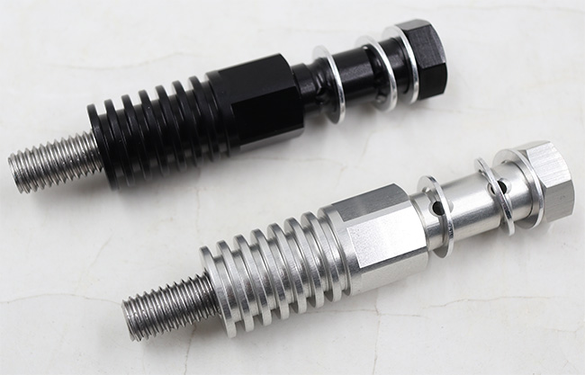 G.259 น๊อตอแดปเตอร์ออยล์หนวดกู้งล่างM8 แบบใหม่ สำหรับใส่สาย2เส้น SR พร้อมแหวนอลูมินั่ม2ชิ้น ผลิตจาก Alloy 7075+M8 Sus ช่วยระบายความร้อนได้ดีมากๆ มีสี ดำ,เงิน ชุดละ 750 ฿ 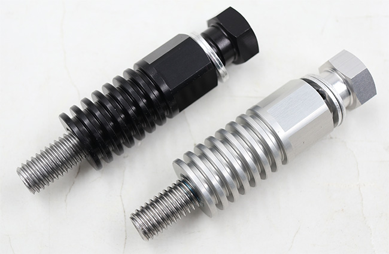 G.258 น๊อตอแดปเตอร์ออยล์หนวดกู้งล่างM8 แบบใหม่ สำหรับใส่สายเส้นเดียว SR พร้อมแหวนอลูมินั่ม2ชิ้น ผลิตจาก Alloy 7075+M8 Sus ช่วยระบายความร้อนได้ดีมากๆ มีสี ดำ,เงิน ชุดละ 650 ฿ 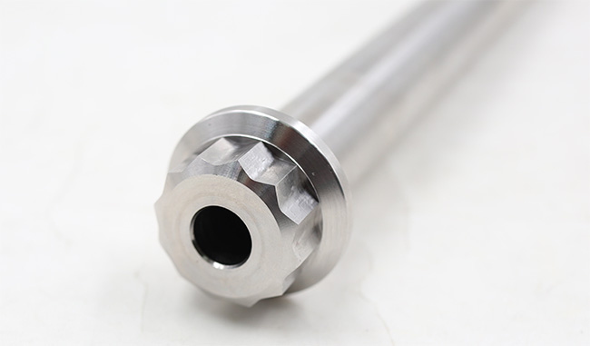
G.257 แกนล้อหลัง ขนาด17x250 mm.12เหลี่ยม ใส่แทนของเดิมได้เลย ผลิตจากแสตนเลส กัดหลี่ยม12เหลี่ยมลายเฟือง อันละ 800 ฿
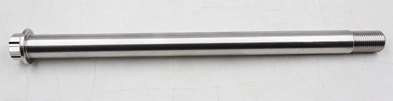 G.256 แกนล้อหลัง ขนาด17x250 mm.6เหลี่ยม ใส่แทนของเดิมได้เลย ผลิตจากแสตนเลส กัดหลี่ยม6เหลี่ยมลายเฟือง อันละ 800 ฿ 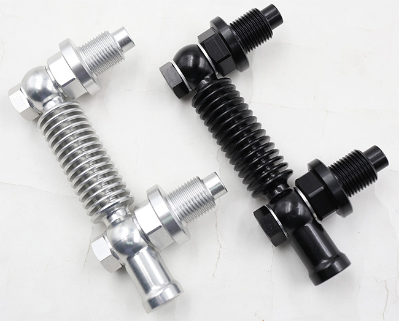 G.255 อแดปเตอร์ทวินออยล์ส่งน้ำมันเครื่องหัวเครื่อง SR แบบฟินแท่ง งาน Alloy CNC Billet มีสี ดำ,เงิน ชุดละ 1800 ฿ 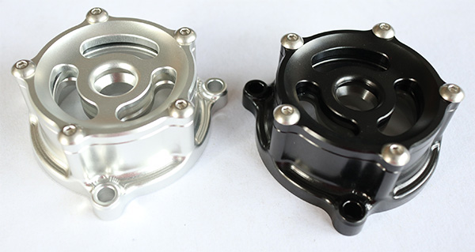 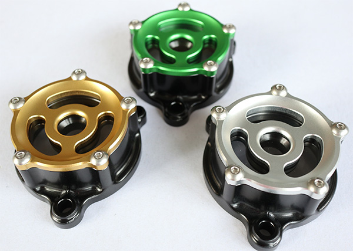 G.254 ฝากรองแต่ง แบบเลนส์ใส ใส่SR400/500,XT,TT ผลิตจาก Alloy CNC Billet (มีสี เงิน/ดำ/ทอง/ดำ-เงิน/ดำ-ทอง/ดำ-เขียว/ดำ-แดง/ฮาร์ด)ชิ้นล่ะ 1,900 ฿ 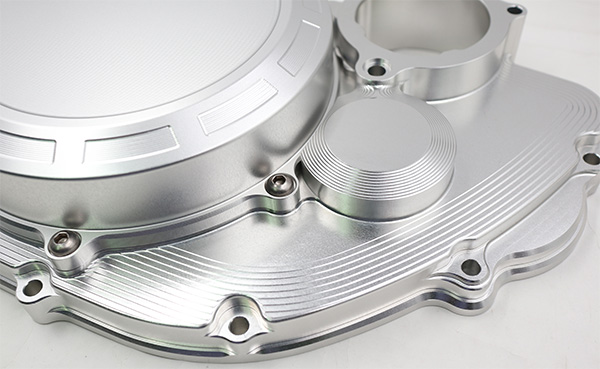 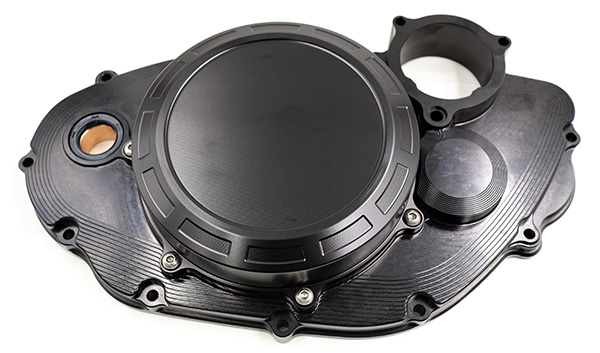 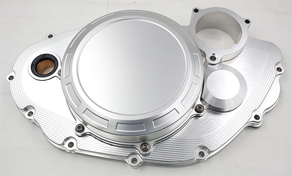 G.253 ฝาคลัชแต่ง แบบทึบ ใส่SR400/500 ผลิตจาก Alloy CNC Billet (มีสี เงิน/ดำ สามารถเลือกสลับสีได้)ชิ้นล่ะ 19,500 ฿ 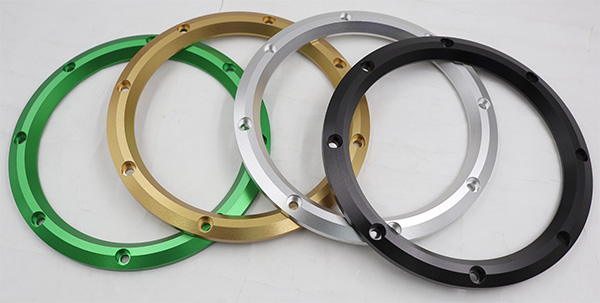 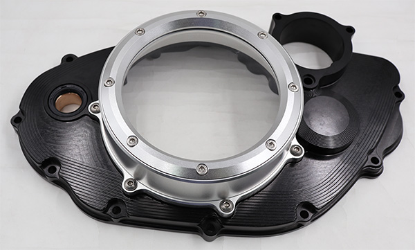 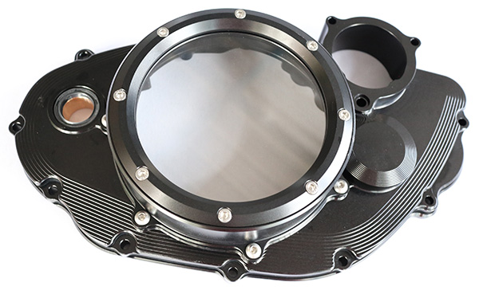 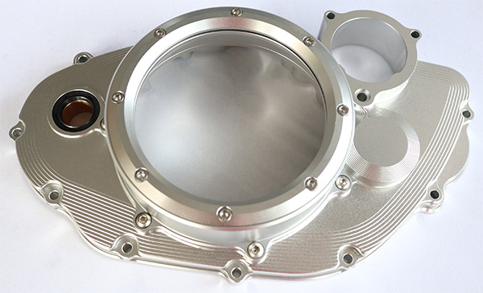 G.252 ฝาคลัชแต่ง แบบเลนส์ใส ใส่SR400/500 ผลิตจาก Alloy CNC Billet (มีสี เงิน/ดำ/ดำ-ครอบเงิน+แหวนมีสี ดำ/เงิน/ทอง/เขียว) สลับสีได้ ชิ้นล่ะ 19,500 ฿ 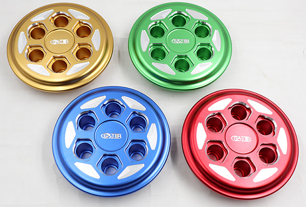
G.251 ฝากดคลัชแต่ง แบบลายโค้งมน ใส่SR400/500,XT,TT ผลิตจาก Alloy CNC Billet (มีสี เงิน/ดำ/ทอง/น้ำเงิน/เขียว/แดง/ฮาร์ด)ชิ้นล่ะ 3,500 ฿ 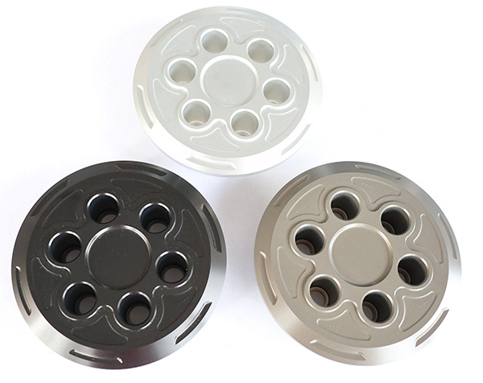 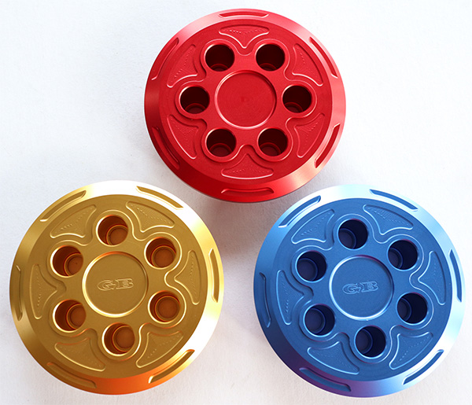 G.250 ฝากดคลัชแต่ง แบบลายเหลี่ยม ใส่SR400/500,XT,TT ผลิตจาก Alloy CNC Billet (มีสี เงิน/ดำ/ทอง/น้ำเงิน/เขียว/แดง/ฮาร์ด/ส้ม)ชิ้นล่ะ 3,800 ฿ 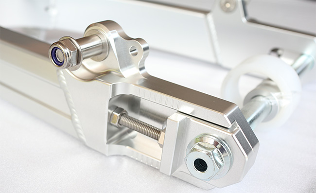 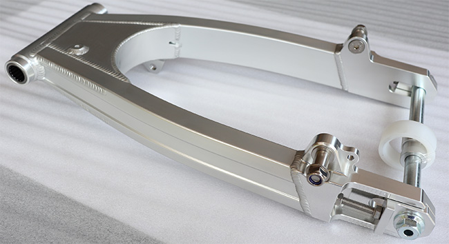 G.249 สวิงอาร์มอลูมิเนียมแต่ง Yamaha SR Type 4 ผลิตจาก Alloy ใส่แทนของเดิมได้เลยไม่ต้องดัดแปลง มีอุปกรณ์มาให้ครบชุด พร้อมลูกปืนสวิงอาร์มครบ และจุดยึดบังโซ่เดิมได้ด้วย ชุดล่ะ 6,500 ฿ มีสี (ปัดเงา/เงิน/ดำ/เทา) 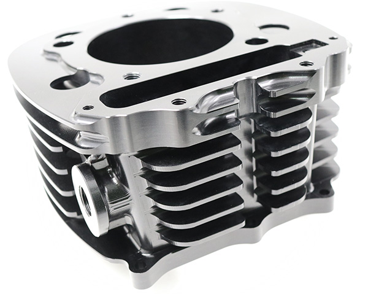 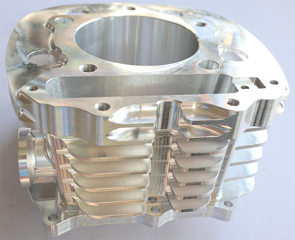
G.248 ชุดเสื้อสูบอลูมิเมียม SR400/500 CNC Billet แบบทรงเดิม ผลิตจาก Alloy 6061 สามารถคว้านใส่ปลอกสูบเดิมได้เลย และสามารถคว้านขยายใส่ปลอกสูบและลูกสูบได้มากกว่า 100 mm. รองรับกำลังอัดสูงๆของลูกที่หัวนูนได้ดีมากๆ ป้องกันเสื้อสูบแตกและฉีกขาดออกจากกันได้ อันล่ะ 18,500 ฿ (มีแบบ งานกัดดิบ,ชุบสีเงิน,ชุบสีดำ) 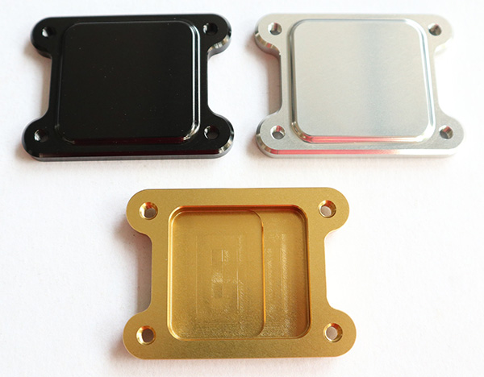 G.247 แผ่นอุดแพร์ใต้หัวฉีด PAIR Cover ผลิตจาก Alloy CNC Billet สำหรับใส่ yamaha sr ปี 2001-2022 (มีสี เงิน/ดำ/ทอง) แผ่นละ 400 ฿ 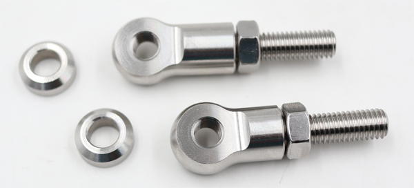 G.246 อแดปเตอร์ต่อขากันสะบัด M8 ผลิตจาก Sus Cnc Billet ชุดละ 350 บาท 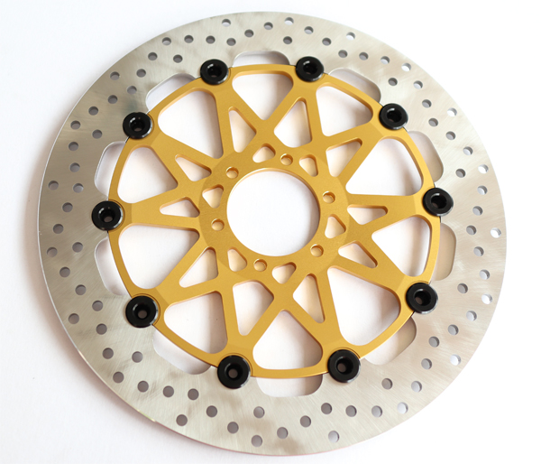 G.245 จานเบรคแต่ง ลายซิ่ง SR1978 และใส่กับล้อแม็ก Y'S GEAR ได้ ขนาดจาน 320 mm.หนา 4.5 mm. แผ่นจานเบรคเป็นของแท้ซันสตาร์ ใส้จานผลิตจาก Alloy6061+Pins Alloy7075 CNC Billet (มีหลายสีหลายแบบให้เลือกตามต้องการ) ใส้จานมีสี ดำ/ทอง/ฮาร์ด ชุดล่ะ ฿ (ใส่กับล้อ TZ,SRX,XJR ได้) *ของหมดSold. 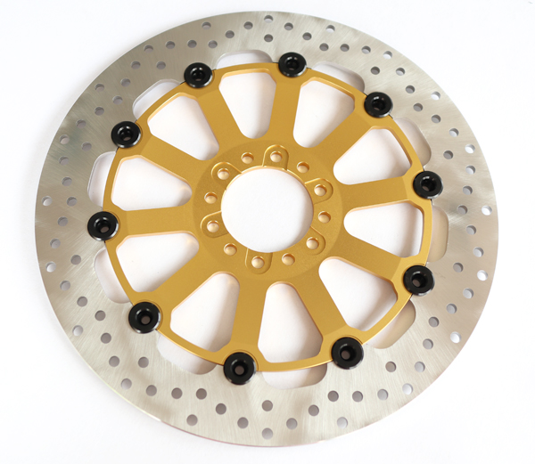 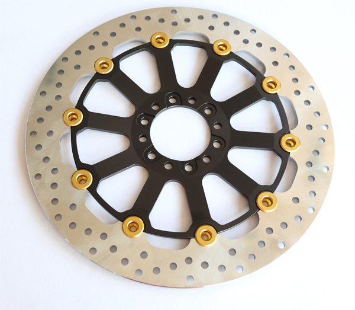 G.244 จานเบรคแต่ง ลายทานตะวัน SR1978 และใส่กับล้อแม็ก Y'S GEAR ได้ ขนาดจาน 320 mm.หนา 4.5 mm. แผ่นจานเบรคเป็นของแท้ซันสตาร์ ใส้จานผลิตจาก Alloy6061+Pins Alloy7075 CNC Billet (มีหลายสีหลายแบบให้เลือกตามต้องการ) ใส้จานมีสี ดำ/ทอง/ฮาร์ด ชุดล่ะ ฿ (ใส่กับล้อ TZ,SRX,XJR ได้) *ของหมดSold. 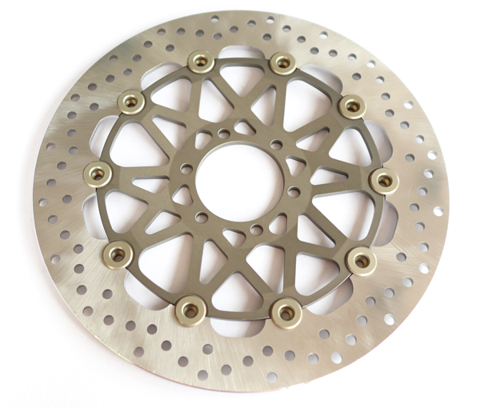 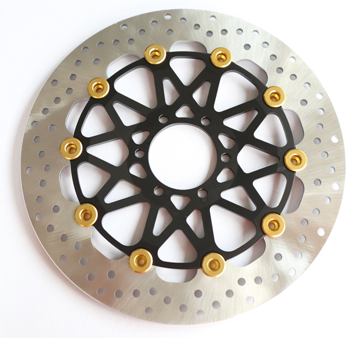 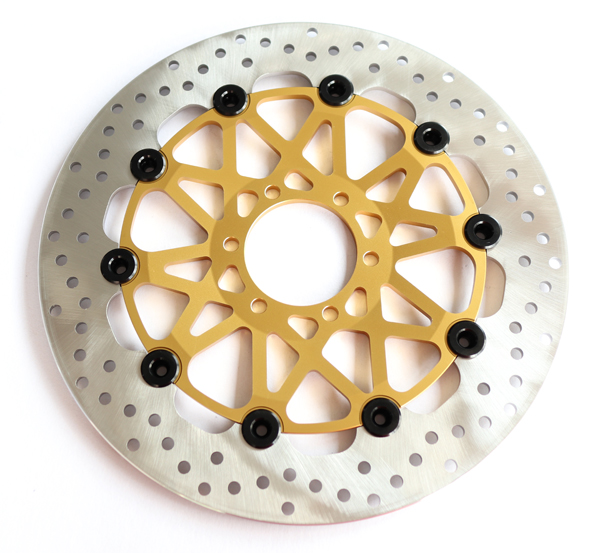 G.243 จานเบรคแต่ง ลายซิ่ง SR1978 และใส่กับล้อแม็ก Y'S GEAR ได้ ขนาดจาน 300 mm.หนา 4.5 mm. แผ่นจานเบรคเป็นของแท้ซันสตาร์ ใส้จานผลิตจาก Alloy6061+Pins Alloy7075 CNC Billet (มีหลายสีหลายแบบให้เลือกตามต้องการ) ใส้จานมีสี ดำ/ทอง/ฮาร์ด ชุดล่ะ ฿ (ใส่กับล้อ TZ125 ได้) *ของหมดSold. 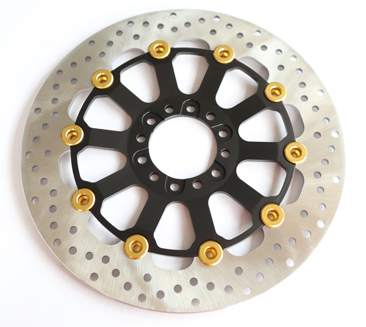 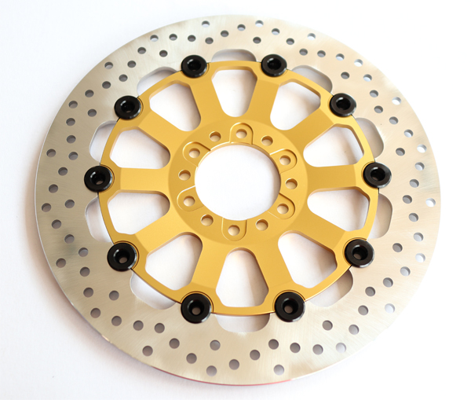 G.242 จานเบรคแต่งลายทานตะวัน SR1978 และใส่กับล้อแม็ก Y'S GEAR ได้ ขนาดจาน 300 mm.หนา 4.5 mm. แผ่นจานเบรคเป็นของแท้ซันสตาร์ ใส้จานผลิตจาก Alloy6061+Pins Alloy7075 CNC Billet (มีหลายสีหลายแบบให้เลือกตามต้องการ) ใส้จานมีสี ดำ/ทอง/ฮาร์ด ชุดล่ะ ฿ *ของหมดSold. 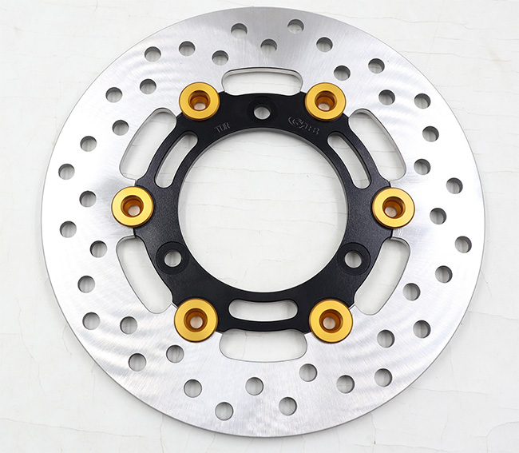 G.241-1 จานเบรคหลังแต่งใส่ดุม TDR ลายฉลุ ขนาดจาน 220 mm. หนา 5 mm.ใส้จานผลิตจาก Alloy7075+Pins Alloy7075 CNC Billet (มีหลายสีหลายแบบให้เลือกตามต้องการ) ใส้จานมีสี ดำ/ทอง/ฮาร์ด หมุดจานมีสี ดำ/ทอง/อาร์ด/แดง ชุดล่ะ 3,500 ฿ 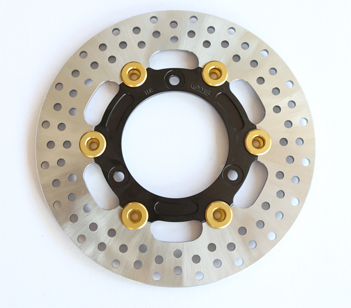 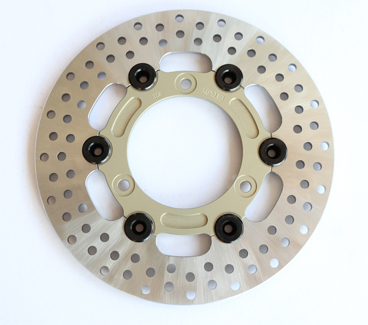 G.241 จานเบรคหลังแต่งใส่ดุม TDR ขนาดจาน 220 mm. หนา 4.5 mm. แผ่นจานเบรคเป็นของแท้ซันสตาร์ ใส้จานผลิตจาก Alloy7075+Pins Alloy7075 CNC Billet (มีหลายสีหลายแบบให้เลือกตามต้องการ) ใส้จานมีสี ดำ/ทอง/ฮาร์ด ชุดล่ะ 3,500 ฿ 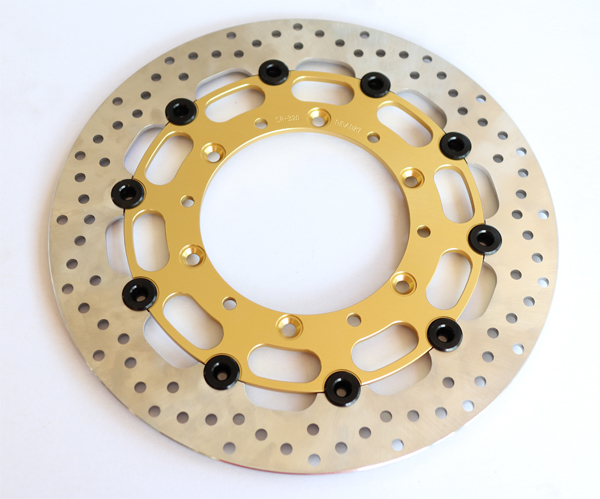 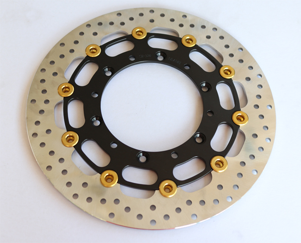 G.240 จานเบรคแต่ง SR2001-2021 ขนาดจาน 320 mm.หนา 4.5 mm. แผ่นจานเบรคเป็นของแท้ซันสตาร์ ใส้จานผลิตจาก Alloy6061+Pins Alloy7075 CNC Billet (มีหลายสีหลายแบบให้เลือกตามต้องการ) ใส้จานมีสี ดำ/ทอง/ฮาร์ด ชุดล่ะ ฿ *ของหมดSold. 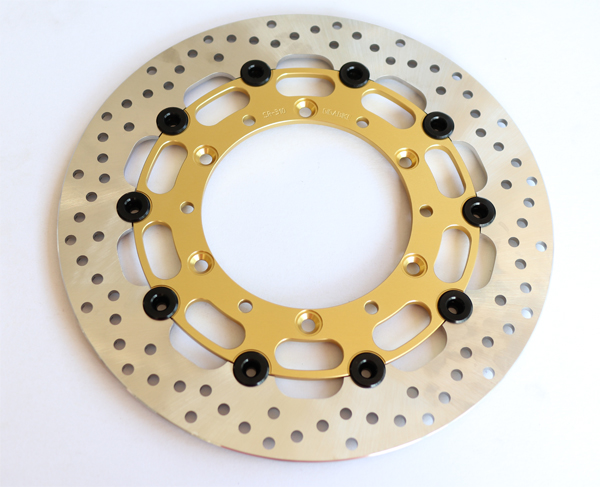 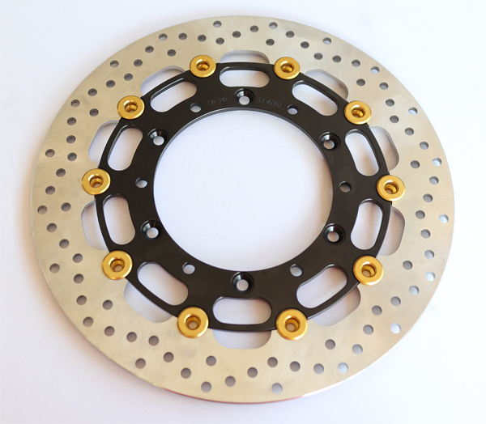 G.239 จานเบรคแต่ง SR2001-2021 ขนาดจาน 310 mm.หนา 4.5 mm. แผ่นจานเบรคเป็นของแท้ซันสตาร์ ใส้จานผลิตจาก Alloy6061+Pins Alloy7075 CNC Billet (มีหลายสีหลายแบบให้เลือกตามต้องการ) ใส้จานมีสี ดำ/ทอง/ฮาร์ด ชุดล่ะ ฿ *ของหมดSold. 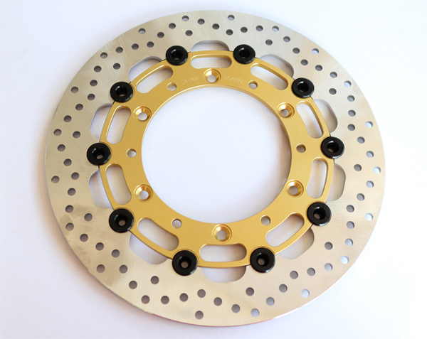
G.238 จานเบรคแต่ง SR2001-2021 ขนาดจาน 300 mm.หนา 4.5 mm. แผ่นจานเบรคเป็นของแท้ซันสตาร์ ใส้จานผลิตจาก Alloy6061+Pins Alloy7075 CNC Billet (มีหลายสีหลายแบบให้เลือกตามต้องการ) ใส้จานมีสี ดำ/ทอง/ฮาร์ด ชุดล่ะ ฿ *ของหมดSold.
G.237 สปริงปั๊มกะทุ้งเบรกหลัง M8 แบบเล็ก ผลิตจาก สปริง Stainles ปอนด์อย่างดี น็อต Alloy CNC Billet & Anodize ชุดละ 350 ฿ G.236 ปากแตรแต่งใส่คาร์บ FCR 28-33mm. แบบ2ชั้น ผลิตจาก Alloy 7075 CNC Billet มีสี (เงิน,ดำ) ชิ้นล่ะ 2,000 ฿ G.235 ปากแตรแต่งใส่คาร์บู Mikuni TMR 40 mm. Long 55 mm. ผลิตจาก Alloy 7075 CNC Billet มีสี (เงิน,ดำ,แดง) ชิ้นล่ะ 1,000 ฿ G.234 น๊อตอแดปเตอร์ออยล์หนวดกู้งล่างM8 สำหรับใส่สาย2เส้น SR พร้อมแหวนอลูมินั่ม2ชิ้น ผลิตจาก Alloy 7075 ชุดละ 650 ฿ G.233 ขายึดปั๊มเบรคหน้า BREMBO หูชิดใส่ SR 2001-2020 ใส่จาน 310 mm. ผลิตจาก Alloy CNC Billet (มีสี เงิน/ดำ/ฮาร์ด) ชิ้นล่ะ 1200 ฿
G.232 จานเบรคแต่ง SR 2001-2022 ขนาดจาน 310 mm. แผ่นจานเบรคเป็นของแท้ซันสตาร์ ใส้จานผลิตจาก Alloy6061+Pins Alloy7075 CNC Billet (มีหลายสีหลายแบบให้เลือกตามต้องการ) ใส้จานมีสี ดำ/ทอง/ฮาร์ด หมุดจานมีสี ดำ,ทอง,แดง,เขียว,น้ำเงิน,ฮาร์ด ชุดล่ะ 6,000 ฿ G.231 ห่วงสายเบรคแบบยาว รู 10 mm.AN3 สำหรับต่อเข้ากับหัวสายเบรคแบบตรงแบบ45และแบบ90องศาได้ ผลิตจาก Alloy CNC Billet มี4สี (น้ำเงิน-ฟ้า-ดำ-แดง) ชิ้นละ 250 ฿ G.230 น๊อตสายออยล์แต่งขนาด M14 Pit 1.50 ผลิตจาก Alloy CNC Billet มีสี (ดำ-น้ำเงิน-ฟ้า) ชิ้นละ 350 ฿ พร้อมแหวนทองแดง 2 ชิ้น G.229 ชุดกันล้มสำหรับใส่ yamaha sr ผลิตจาก Alloy+เพลา Stainles 304 ทั้งชุด 1,800 ฿ G.228 น๊อตสายออยล์แต่งขนาด M12 Pit 1.50 ผลิตจาก Alloy CNC Billet มีสี (ดำ-น้ำเงิน) ชิ้นละ 350 ฿ พร้อมแหวนทองแดง 2 ชิ้น G.227 ยกวาล์วหัวเครื่องสำหรับใส่ SR,XT,TT ผลิตจาก Allloy CNC Billet (สีดำ/เงิน/ทอง/ฮาร์ด) ชุดล่ะ 1200 ฿ G.226 ชุดแผงคอบนแบบใส่ลูกยางกันสั่นกับตุ๊กตาเดิม SR ได้เลย ใส่กับโช๊คเดิมขนาด 35 mm.และแผงคอล่างเดิมได้เลย ผลิตจาก Alloy CNC Billet สวยงามแข็งแรง (มีสี เงิน/ดำ) ชุดล่ะ 4,500 ฿
G.225 ชุดแผงคอบนแบบใส่ลูกยางกันสั่นกับตุ๊กตาเดิม SR ได้เลย ใส่กับโช๊ค Ohlins FG433 & FG621 Sweden 43 mm. ผลิตจาก Alloy CNC Billet สวยงามแข็งแรง (มีสี เงิน/ดำ) ชุดล่ะ 5,000 ฿
G.224 น็อตยึดปั๊มหน้าและขาปั๊ม brembo Bolt. M10x1.5 ยาว 25 mm. & M10x1.25 ยาว 20 & 25 mm.ผลิตจากสแตนเลส 304 กลึงด้วยเครื่อง cnc ชิ้นละ 100 ฿ G.223 ชุดย้ายพักเท้าหลังหลบท่อไอเสียแบบยก สำหรับใส่ SR FI ผลิตจาก Alloy CNC Billet มีสี (ดำ/เงิน/ฮาร์ด) ชุดละ 2400 ฿ G.222 ฝาปิดสเตอร์หน้าแต่ง SR400/500 ใส่ได้ปี1978-2022,XT,TT แบบทรงเดิมนูนทึบ ผลิตจาก Alloy CNC Billet มีสี ดำ/เงิน/ปัดเงา ชิ้นล่ะ 2,500 ฿ G.221 ชุดน็อตล๊อคตัวตั้งโซ่ราวลิ้นแต่ง SR400/500 ผลิตจาก Alloy 7075 CNC Billet ใส่ SR,XT (Color–Silver,Gold,Hard,Red) ชุดล่ะ 900 ฿ G.220 น็อตล๊อคตัวตั้งโซ่ราวลิ้นแต่ง SR400/500 ผลิตจาก Alloy 7075 CNC Billet ใส่ SR,XT (Color–Silver,Gold,Hard,Red) ชิ้นล่ะ 500 ฿ G.219 ยางรองล๊อคหูถังน้ำมันด้านหลัง SR ชิ้นละ 200 ฿ G.218 ยางหุ้มโช๊คแต่ง3ปล้องทรงใหญ่สำหรับใส่ SR พร้อมตะขอเกี่ยว คู่ละ 550 ฿ G.217 มือลิงดึงดรั๊มเบรคหลัง SR แบบยาว105 mm.เหมาะสำหรับใส่เข้ากับชุดเกียร์แบบโยง ผลิตจาก Alloy 6061 CNC Billet มีสี เงิน/ดำ/ทอง/ฮาร์ท ชุดละ 1,000 ฿ G.216.1 จานเบรคแต่ง SR 2001-2020 แบบดาว ขนาดจาน 298mm. เท่าของเดิม ใส้จานผลิตจาก Alloy6061+Pins Alloy7075 CNC Billet (มีหลายสีหลายแบบให้เลือกตามต้องการ) ชุดล่ะ 5,500 ฿
G.216 จานเบรคแต่ง SR 2001-2020 แบบไข่ ขนาดจาน 298mm. เท่าของเดิม ใส้จานผลิตจาก Alloy6061+Pins Alloy7075 CNC Billet (มีหลายสีหลายแบบให้เลือกตามต้องการ) หมุดจานมีสี ดำ,ทอง,แดง,เขียว,น้ำเงิน,ฮาร์ด ชุดล่ะ 5,500 ฿ G.215 ฝาครอบม๊าคแคมแต่ง SR,XT,TT แบบครีบ ผลิตจาก Allloy 7075 CNC Billet (สีดำ/เงิน/ทอง) ชิ้นล่ะ 700 ฿ G.214 ฝาครอบม๊าคแคมแต่ง SR,XT,TT แบบเรียบ ผลิตจาก Allloy 7075 CNC Billet (สีดำ/เงิน/ทอง) ชิ้นล่ะ 600 ฿ G.213 ฝาครอบม๊าคแคมแต่ง SR,XT,TT แบบหลุม ผลิตจาก Allloy 7075 CNC Billet (สีดำ/เงิน/ทอง) ชิ้นล่ะ 600 ฿
G.212 ฝาครอบกรองน้ำมันเครื่องแต่ง SR,SRX แบบใบกันชา ผลิตจาก Alloy 6061 CNC Billet มีสี ดำ-เงิน-ฮาร์ท อันละ 700 ฿ G.211 ชุดพักเท้าหน้าแบบเกียร์โยง ใส่ SR400/500 แบบดิสเบรคใส่ปั๊มกะทุ้งเบรค Brembo หูคู่ได้เลยไม่ต้องดัดแปลง ผลิตจาก Alloy 6061+7075 CNC Billet ทั้งชุด คงทนแข็งแรง ใช้คันสตาร์ทเดิมได้เลย มีสี (ดำ / เงิน) ชุดละ 5,500 ฿ G.210.1 ชุดพักเท้าหน้าแบบเกียร์โยง ใส่ SR400/500 แบบดรั๊มเบรค ผลิตจาก Alloy 6061+7075 CNC Billet ทั้งชุด แบบชุบฮาร์ทพิเศษคงทนแข็งแรงกันรอยได้ดีมาก ใช้คันสตาร์ทเดิมได้เลย สีฮาร์ท ชุดละ 5,200 ฿ G.210 ชุดพักเท้าหน้าแบบเกียร์โยง ใส่ SR400/500 แบบดรั๊มเบรค ผลิตจาก Alloy 6061+7075 CNC Billet ทั้งชุด คงทนแข็งแรง ใช้คันสตาร์ทเดิมได้เลย มีสี (ดำ/เงิน/ทอง) ชุดละ 4,800 ฿ G.209 แผงไมล์แต่ง Alloy สำหรับใส่ YAMAHA SR ใส่เข้ากับเรือนไมล์เดิมไดเลย ชิ้นล่ะ 1500 ฿ G.208 ขายึดปั๊มเบรคหน้า BREMBO หูชิดใส่ SR 2001-2018 ใส่จาน 320 มม. ผลิตจาก Alloy CNC Billet (มีสี เงิน/ดำ) ชิ้นล่ะ 1200 ฿
G.207 ขายึดปั๊มเบรคหน้า BREMBO หูชิดใส่ SR 2001-2018 ใส่จาน 300 มม. ผลิตจาก Alloy CNC Billet (มีสี เงิน/ดำ) ชิ้นล่ะ 1200 ฿ G.206 ปากแตรแต่งใส่คาร์บู Mikuni TMR 40mm. & FCR35-41mm. แบบ2ชั้น ผลิตจาก Alloy 7075 CNC Billet มีสี (เงิน,ดำ) ชิ้นล่ะ 2,500 ฿ G.205 ชุดแผงคอบนล่าง SR ใส่กับโช๊คแต่งแกนโช๊ค 40 mm. ผลิตจาก Alloy 6061 + 7075 CNC Billet สวยงามแข็งแรง ชุดล่ะ 12,500 ฿
G.204 หูยึดเครื่องแต่งแบบแยกใส่กันล้มได้ต่างหาก ใส่ได้กับรถ SR ทุกปี ผลิตจาก Alloy 6061 CNC Billet มีสี ดำและสีเงิน คู่ล่ะ 1600 ฿ G.203 น๊อตดิสเบรคทวินใส่สายเบรคได้2เส้น ผลิตจาก Alloy 7075 CNC Billet M10x1.25 มี3สี (ดำ-ขาว-ทอง) ชิ้นละ 250 ฿ พร้อมแหวนอลูมิเนียม3ชิ้น G.202 น๊อตแกนล้อหน้า SR ผลิตจาก Alloy 7075 CNC Billet M14x1.5 ชุบสี อโนไดซ์ แบบ Hard Anodize เพิ่มความแข็งมากขึ้นกันรอยได้ดีและทำให้เกลียวแข็งแรงมากขึ้น (มีสีดำและสีฮาร์ท) ชิ้นล่ะ 350 ฿ G.201 บู๊ทรองเบาะ สำหรับใส่ SR400 FI ที่ต้องการเอาเบาะแต่ง SR รุ่น Carburetor มาใส่ได้เลยไม่ต้องดัดแปลง ชุดละ 450 ฿ G.200 สเตอร์หน้า CNC Billet SR400 ผลิตจากเหล็กกล้าและชุบแข็งอย่างดี มีขนาดใส่โซ่ 520-15,16,17 ฟัน อันละ 600 ฿ G.199 สเตอร์หน้า CNC Billet SR400 ผลิตจากเหล็กกล้าและชุบแข็งอย่างดี มีขนาดใส่โซ่ 428-19,20,21ฟัน อันละ 600 ฿ G.198 บู๊ทล้อหลัง SR ใส่ได้ทุกปีทุกรุ่น ผลิตจาก Alloy 6061 CNC Billet (มีสี ดำ/ทอง และแบบชุบฮาร์ทไทเทเนี่ยม) ชิ้นล่ะ 300 ฿ G.197 บู๊ทล้อหน้า SR รุ่นดิสเบรค ปี 2001-2018 ผลิตจาก Alloy 6061 CNC Billet (มีสี ดำ/ทอง และแบบชุบฮาร์ทไทเทเนี่ยม) ชิ้นล่ะ 300 ฿ G.196 หูยึดไฟหน้า CNC แบบตัว V สั้น ขนาด 35 mm. ความยาว 68 mm. ผลิตจาก Alloy 6061 (มีสีเงินและสีดำ) ชุดล่ะ1,800 ฿ G.195 หูยึดไฟหน้า CNC แบบตัว V ขนาด 35 mm. ความยาว 95 mm. ผลิตจาก Alloy 6061 (มีสีเงินและสีดำ) ชุดล่ะ1,800 ฿
G.194 หัวห่วงสาย Oil รู 14 mm.AN6 สำหรับต่อเข้ากับหัวสาย Oil เบอร์ 6 แบบตรงแบบ45และ90องศาได้ ผลิตจาก Alloy CNC Billet มี2สี (ฟ้า-ดำ) ชิ้นละ 350 ฿
G.193 ห่วงสายเบรคแบบสั้น รู 10 mm.AN3 สำหรับต่อเข้ากับหัวสายเบรคแบบตรงแบบ45และแบบ90องศาได้ ผลิตจาก Alloy CNC Billet มี4สี (น้ำเงิน-ฟ้า-ดำ-แดง) ชิ้นละ 250 ฿
G.192 น๊อตตัวผู้สำหรับต่อเข้าปั๊ม Brembo มีเกลียว M10x1.0 และ M10x1.25 ,AN3 ผลิตจาก Alloy 7075 มีสี (น้ำเงิน-ดำ-เงิน) ชิ้นละ 250 ฿
G.191 น๊อตตัวเมียล๊อคโช๊ตหลัง Ohlins เกลียว M14x1.0 ผลิตจาก Alloy 7075 มี2สี (น้ำเงิน-ฟ้า) ชิ้นละ 150 ฿
G.190 ชุดแผงคอบนล่างแบบมีตุ๊กตาแต่ง SR ใส่กับโช๊ค Ohlins 43 mm. ได้เลยไม่ต้องดัดแปลง ผลิตจาก Alloy 6061 + 7075 ด้วยเครื่อง CNC สวยงามแข็งแรง (มีสี เงิน/ดำ) ชุดล่ะ 14,500 ฿ (สีอโนไดซ์ดำสนิทไม่ม่วงไม่เหนียวแน่นอนรับประกัน) G.189 ขายึดบังโคลนหน้าพร้อมหูรัดกระบอกโช๊คหน้า ใส่กับโช๊ค Ohlins 43 mm. ใส่กับรูบังโคลนหน้า SR เดิมได้เลยใส่ได้กับล้อ 17,18,19 นิ้ว ผลิตจาก Alloy CNC Billet (มีสี ทอง-ดำ / ดำล้วน) คู่ล่ะ 2,000 ฿
G.188 หูรัดกระบอกโช๊คหน้า ใส่กับโช๊ค Ohlins 43 mm. ไว้สำหรับใส่บังโคลนหน้า ผลิตจาก Alloy 6061(มีสี ทอง/ดำ/เงิน) คู่ล่ะ 1200 ฿ G.187 ขายึดปั๊มเบรค Brembo หูชิด ข้างซ้าย ใส่กับโช๊ค Ohlins 43 mm.ใส่จาน 320 mm. ผลิตจาก Alloy 6061(มีสี ดำ/เงิน) ชิ้นล่ะ 1600 ฿ G.186 ชุดแกนล้อ17 mm.+บู๊ทล้อ+บู๊ทโช๊คหน้า SR ใส่เข้ากับดุมดิสเบรตและโช๊ค Ohlins 43 mm. ผลิตจาก Alloy 7075 ชุดล่ะ 2000 ฿
G.185 ขายึดปั๊มเบรค Brembo หูชิดใส่กับโช๊ค Ohlins 43 mm.ใส่จาน 320 mm. ผลิตจาก Alloy 6061(มีสี ดำ/เงิน) ชิ้นล่ะ 1600 ฿ G.184 ถาดเก็บสายสายไฟใต้เบาะ Stainless แบบรูพับ ใส่ Yamaha SR ชิ้นล่ะ 850 ฿ G.183 น๊อตอแดปเตอร์ออยล์หนวดกู้งล่างM8 สำหรับใส่สายเส้นเดียว SR พร้อมแหวนอลูมินั่ม2ชิ้น ผลิตจาก Alloy 7075 มี2สี (ดำ-ขาว) ชุดละ 550 ฿
G.182 น๊อตดิสเบรค มีเกลียว M10 Pit 1.0 สำหรับปั๊มเบรค Brembo และ เกลียว M10 Pit 1.25 สำหรับปั๊ม Nissin ผลิตจาก Alloy 7075 T6 มี3สี (ดำ-ขาว-ฟ้า) ชิ้นละ 200 ฿ พร้อมแหวนอลูมินั่ม2ชิ้น
G.181 หูยึดไฟหน้า SR แบบใหม่ล่าสุด (แบบซี่ยาว) งาน CNC ผลิตจาก Alloy 6061 T6 ขนาด 35mm. ยาว 95 mm. (มีสี เงิน-ดำ) ชุดล่ะ1,800 ฿ G.180 หูยึดไฟหน้า SR แบบใหม่ล่าสุด (แบบซี่ตรงสั้น) งาน CNC ผลิตจาก Alloy 6061 T6 ขนาด 35mm. ยาว 66 mm. มีสี เงิน-ดำ) ชุดล่ะ1,400 ฿ G.179 จุกอุดแทนสายวัดรอบเดิม yamaha sr ผลิตจาก Alloy 6061 มี 3 สีให้เลือก (ดำ-เงิน-ทอง-แดง) ชิ้นละ 300 ฿ G.178 บังโคลนหน้าแต่ง รุ่นเหล็กคาดสั้น ลวดคาดผลิตจากเหล็กและแผ่นบังโคลนผลิตจากอลูมิเนียมปั๊มขึ้นรูปทั้งชิ้น ขนาด 300 mm. ชื้นละ 1800 ฿
G.177 ขายึดไฟเลี้ยวหน้าแต่งอลูมิเนียม แบบใส่เข้ากับแกนโช๊คหน้า ขนาด 35 mm. คู่ล่ะ 700 ฿ G.176 ฝาครอบปิดปั๊มเบรคบน SR 2001-2016 แบบโลโก้ SR มีสองสีให้เลือก ผลิตจากอลูปิเนียมเกรดพิเศษ อันล่ะ 500 ฿ G.175 ขายึดปั๊มเบรคหลัง SR ใส่ปั๊ม BREMBO ใส่ล้อ TDR250 ใส่จานขนาด 210 มม.รูแกนล้อ 17 มม.(มีสี ดำ/เงิน) ชิ้นล่ะ 1,400 ฿ G.174 ขายึดปั๊มเบรคหลัง ใส่ปั๊ม BREMBO ใส่จานขนาด 220 มม.รูแกนล้อ 17 มม.(มีสี ดำ/เงิน) ชิ้นล่ะ 1,400 ฿ G.173 แผงไมล์เดี่ยวแต่งสแตนเลสสำหรับใส่ YAMAHA SR ใส่เข้ากับไมล์เดิมหรือวัดรอบเดิมก็ได้ ชิ้นละ 600 ฿ G.172 ฝาครอบปิดฝาปั๊มเบรคบน SR 2001-2016 แบบโลโก้ฝาเรียบ มีสองสีให้เลือก ผลิตจากอลูปิเนียมเกรดพิเศษ อันล่ะ 450 ฿ G.171 ฝาครอบปิดฝาปั๊มเบรคบน SR 2001-2016 แบบร่อง มีสองสีให้เลือก ผลิตจากอลูปิเนียมเกรดพิเศษ อันล่ะ 450 ฿ G.170 ฝาครอบปิดฝาปั๊มเบรคบน SR 2001-2016 แบบโลโก้ฝานูน มีสองสีให้เลือก ผลิตจากอลูปิเนียมเกรดพิเศษ อันล่ะ 450 ฿ G.169 ฝาครอบปิดฝาปั๊มเบรคบน SR 1978 แบบร่อง มีสองสีให้เลือก ผลิตจากอลูปิเนียมเกรดพิเศษ อันล่ะ 500 ฿ G.168 คอท่อแต่ง Stainless สำหรับใส่ SR FI (รุ่นหัวฉีด) แบบทรงเดิม 2 โค้ง 2,200฿ G.167 ปลอกมือแต่งใส่ได้ทุกรุ่น คู่ละ 500฿ G.166 แผงคอบนแต่งพร้อมตุ๊กตา ใส่ SR,XS650 ผลิตจากอลูเนียมเกรดพิเศษด้วยเครื่อง CNC สวยงามแข็งแรง (มีสี เงิน/ดำ/ทอง)ชุดล่ะ 3,500 ฿ G.165 ไฟท้ายแต่งแบบทรงกลม สำหรับใส่ SR แบบ Led ขาสแตนเลสทั้งชิ้น 1,700 ฿ G.164 คอท่อแต่งสแตนเลส สำหรับใส่ SR FI (รุ่นหัวฉีด) แบบเลื้อย3โค้ง 2,300฿ G.163 แผ่นรองจานเบรค SR ใส่จาน SR 2001-2026 แปลงใส่ดุมล้อปีเก่า 1978 และใส่ล้อแม็ก Y'S GEAR มีสี ดำ/เงิน แผ่นละ 1,500 ฿ G.162 แผ่นอุดแพร์ PAIR Cover ผลิตจาก Alloy 7075 CNC Billet สำหรับใส่ yamaha sr ปี 2001-2022 (มีสี เงิน/ดำ/ทอง) แผ่นละ 250 ฿ ยาวกว่า1นิ้ว=ขนาด 270 mm. ยาวเท่าเดิมและใช้สปริงแบบยาว=ขนาด 245 mm. G.161 ขาตั้งเดี่ยวแต่ง SR ผลิตจาก Stainless 304 ด้วยเครื่องจักร CNC มีสองแบบสองขนาดให้เลือก มีแบบสั้นกว่าเดิมกว่า1นิ้ว=220 mm.และยาวเท่าเดิมและใช้สปริงแบบยาว=ยาว 245 mm. และยาวกว่า1นิ้ว=270 mm.ครับ มีแบบรูปเท้าและแบบเรียบๆให้เลือกเลยครับ ชิ้นละ 1800 ฿ G.160 แหวนรองสปริงวาวล์ไอดีและไอเสีย SR ผลิตจาก Alloy 7075 CNC Billet น้ำหนักเพียง 8.5 กรัม (ของเดิม 20 กรัม) พร้อมชุบอโนไดซ์สีเคลือบผิวเพื่อให้แข็งขึ้น ข้อดีของมันคือ เบาและช่วยระบายความร้อนของสปริงทำให้สปริงมีแรงถีบวาวล์กลับเร็วขึ้น ทดสอบในสนามแข่งเป็นที่เรียบร้อยแล้วครับมั่นใจได้ คู่ละ 600 ฿ G.159 ขายึดปั๊มเบรคหลัง BREMBO ใส่ SR,SRX,XJR ใส่จาน 245-250 มม.(มีสี ดำ/เงิน) ชิ้นล่ะ 1,400 ฿
G.158 หูยึดไฟหน้ารุ่นใหม่ล่าสุดแบบตรงงาน CNC พร้อมรูสำหรับใส่ไฟเลี้ยว มีขนาด 35mm. ยาว 95 mm. (มีสีเงินและสีดำ) ชุดล่ะ1,400 ฿ G.157 ฝาครอบดุมดิสเบรคปีเก่าใส่แทนพลาสติกเดิมได้เลย ผลิตจากอลูมิเนียมเกรดพิเศษ ชิ้นล่ะ 450 ฿ (มีแบบปัดเงาและสีดำ) G.156 น๊อตแกนล้อหลัง SR ผลิตจาก Alloy 7075 CNC Billet M16x1.5 (มีสีดำ-สีเงิน-สีทอง-สีเทาฮาร์ท) ชิ้นล่ะ 350 ฿ G.155 น๊อตออยล์หนวดกู้งล่าง M8 ใช้แทนน๊อตเหล็กเดิมได้เลยช่วยระบายความร้อนได้เป็นอย่างดี ผลิตจาก Alloy CNC Billet (มีสีดำสีเงินและสีทอง) ชิ้นล่ะ 350 ฿ G.154 อแดปเตอร์ฝาวาร์วไอเสียแบบครีบ SR ผลิตจาก Alloy CNC Billet (มีสี ดำ/เงิน/สีทองเชมเปน) พร้อมน๊อต2ชิ้น 1500 ฿ G.153 ขายึดกันสะบัด SR สำหรับยึดติดกับโครงรถ ผลิตจาก Alloy 6061 CNC Billet (มีสี ดำ/เงิน)ชิ้นล่ะ 900 ฿ G.152 ขายึดท่อสแตนเลส 900 ฿ G.151 ขายึดกันสะบัดแต่ง SR สำหรับติดเข้ากับแกนโช๊คขนาด 35 mm. ผลิตจาก Alloy 6061 CNC Billet (มีสี ดำ/เงิน) ชิ้นล่ะ 600 ฿ G.150 น๊อตขันโช๊คหลัง งาน CNC Billet ผลิตจาก Alloy 7075 Pit M10x1.25 มีสี (ดำ-เงิน-ทอง) ชุดละ 350 ฿ G.149.1 น็อตขันหัวโช๊ค SR แบบเรียบ งาน CNC ใช้ได้กับปี 1978 และ 2000-2017 ผลิตจาก Alloy 6061 มีสี (ดำ-เงิน-ทอง) คู่ละ 800 ฿ G.149 น็อตขันหัวโช๊ค SR แบบหลุม งาน CNC ใช้ได้กับปี 1978 และ 2000-2017 ผลิตจาก Alloy 6061 มีสี (ดำ-เงิน-ทอง-ส้ม) คู่ละ 800 ฿ G.148 ฝาปิดน้ำมันเครื่องบนเฟรม yamaha sr แบบน็อตขัน ผลิตจาก Alloy 6061 CNC Billet มีสี (ดำ-เงิน-ทอง) อันละ 600 ฿ G.147 บู๊ทรองพักเท้าหน้า ผลิตจาก Alloy งาน CNC Billet ใส่แทนลูกยางเดิม ทำให้พักเท้าเยียบแล้วแน่นขื้นแข็งแรงขึ้น 8 ชิ้น 800 ฿ G.146 ขายึดไฟเลี้ยวแต่ง ผลิตจาก Alloy 7075 งาน CNC Billet สำหรับใส่ YAMAHA SR คู่ละ 450 ฿ G.145 น๊อตทวินออยล์ส่งน้ำมันเครื่องหัวเครื่อง SR งาน CNC Billet ผลิตจาก Alloy มีเกลียว M10x1.0 และ M10x1.25 มีสี (ดำ/เงิน/ทอง/ฮาร์ท) อันล่ะ 450 ฿ G.144 สเปย์เซอร์รองจานเบรคใส่ดุมปีเก่า SR 1978 หนา 10 mm. ผลิตจาก Alloy CNC Billet มีีสี (ดำ-เงิน) ชิ้นล่ะ 650 ฿ G.143 หูยึดไฟหน้า SR (แบบสั้น)ผลิตจาก Alloy 6061CNC Billet ขนาด 35mm.ยาว 62 mm. (มีสีเงินและสีดำ) ชุดล่ะ1,400 ฿
G.142 หูยึดไฟหน้า SR แบบยาว 95 mm.ผลิตจาก Alloy 6061CNC Billet ขนาด 35mm. (มีสีเงินและสีดำ) ชุดล่ะ1,400 ฿
G.141 มือลิงดึงดรั๊มเบรคหลัง SR แบบสั้นขนาด 80mm. เหมาะสำหรับใส่เข้ากับชุดเกียร์แบบเดิม ผลิตจาก Alloy 6061 CNC Billet มีสี เงิน/ดำ/ทอง/ฮาร์ท ชุดละ 900 ฿ G.140 ชุดล๊อคแผงออยล์หน้า คุณสมบัติช่วยไม่ให้โครงเป็นรอยและยึดแน่นกว่าของเดิม ผลิตจาก Alloy CNC Billet มีสี ดำ-สีเงิน ชุดล่ะ 700 ฿ G.139 ยกวาล์วหัวเครื่องสำหรับใส่ SR,XT,TT มีสองแบบให้เลือก ชุดล่ะ 1,000 ฿ G.138 ปะเก็นฝาสูบ YAMAHA SR ผลิตจากทองแดง 100% หนา 1 mm. มีขนาด 88,89,90,92 mm. & 95 mm.ผลิตด้วยเครื่องจักร CNC สามารถทนร้อนได้มากและรองรับกำลังอัดสูงๆได้สบายๆ สามารถถอดเข้าออกได้หลายๆครั้งคุ้มค่าสุดๆ แผ่นล่ะ 700฿ G.137 พักเท้าหลังแต่งอลูมิเนียมขันล๊อคหูโช๊คหลัง SR รุ่นใหม่ล่าสุดงาน CNC ผลิตจากอลูมิเนียมเกรดพิเศษ คู่ละ 600 ฿ G.136 น๊อตขันท่อส่งน้ำมันเครื่องหัวเครื่อง SRผลิตจากอลูมิเนียมเกรดพิเศษ ด้วยเครื่อง CNC มีสามสีให้เลือก (ดำ เงิน ทอง) คู่ล่ะ 600 ฿ G.135 น๊อตครีบระบายความร้อนกลางเครื่องต่อเข้ากับหัวสายออยเบอร์ AN6 ผลิตจาก Alloy CNC Billet มีสามสีให้เลือก (ดำ เงิน ทอง) ชิ้นล่ะ 500 ฿ G.134 แฮนจับโช๊คอลูมิเนียม ผลิตจากอลูมิเนียมเกรดพิเศษด้วยเครื่อง CNC (มีสีดำและสีเงิน) มีขนาด 34,35,37mm.คู่ล่ะ 1,800 ฿ G.133 แผ่นฝาปลายเปิดท่อแทร๊บ มีสองสีให้เลือก ชิ้นล่ะ 600 ฿ G.132 อแดปเตอร์ทวินออยซ์ สำหรับใส่ YAMAHA SR ผลิตจากอลูมิเนียมเกรดพิเศษด้วยเครื่อง CNC ชิ้นล่ะ 700 ฿ G.131 ฝาครอบปิดฝาปั๊มเบรคบน SR 1978 มีสองสีให้เลือก ผลิตจากอลูปิเนียมเกรดพิเศษ อันล่ะ 500 ฿ G.130 ฝาปิดสเตอร์หน้าแต่ง SR400/500 ใส่ได้ปี1978-2022,XT,TT แบบฉลุ ผลิตจาก Alloy CNC Billet มีสี ดำ/เงิน/ปัดเงา ชิ้นล่ะ 2,500 ฿ G.129 หูยึดเครื่องด้านหน้าแต่ง ใส่ได้กับรถ SR ทุกปี ผลิตจากอลูปิเนียมเกรดพิเศษ ด้วยเครื่อง cnc มีสามสีให้เลือก คู่ล่ะ 1400 ฿ G.128 ชุดอุดตุ๊กตาใส่เข้ากับแผงคอเดิม SR ทั้งชุดซ้าย+ขวา ทั้งชุด 700 ฿ G.127 ชุดยกวาล์วใส่เข้ากับแผงคอเดิม SR ทั้งชุดซ้าย+ขวา ทั้งชุด 1,200 ฿ G.126 ชุดกันล้มสำหรับใส่ yamaha sr ผลิตจากซุปเปอร์ลีน+เพลา Stainles 304 ทั้งชุด 1,500 ฿ G.125 ขายึดล๊อคฝาดรั๊มเบรคหลังแต่ง SR ผลิตจาก Alloy CNC Billet มีสี ดำ/เงิน/ปัดเงา/ฮาร์ท ชิ้นล่ะ 1100 ฿ G.124 ชุดบาร์ลานท์โช๊คหน้า SR ผลิตจาก Alloy CNC Billet มีสี ดำ/เงิน ชุดล่ะ 1,400 ฿ G.123 ชุดดักไอระบายความร้อนผลิตจากไทเทเนี่ยม100% By GIGA BIKE 3ช่อง ชุดล่ะ 2,500 ฿ ผลิตด้วยเครื่องจักรได้มาตรฐานส่งออก G.122 ชุดกล่องดักไอระบายความร้อน ผลิตจากไทเทเนี่ยม100% By GIGA BIKE 2ช่อง ชุดล่ะ 2,200 ฿ ผลิตด้วยเครื่องจักรได้มาตรฐานส่งออก G.121 ซิลยางสวิงอาร์ม SR คู่ล่ะ 250 ฿ G.120 ยางคอคาร์บูเดิม SR ใส่กับคาร์บูเดิมกรองอากาศเดิมได้เลยใหม่แกะกล่อง 700 ฿ และใหม่ล่าสุดคอคาร์บูแต่ง SR สำหรับใส่คาร์บูแต่ง CR,FCR,TMRใส่ได้เลยไม่ต้องดัดแปลง G.119 บู๊ทล้อหน้า yamaha sr รุ่นดรั๊มเบรค ผลิตจากปิเนียมเกรดพิเศษ ชิ้นล่ะ 400 ฿ G.118 ชุดแผงคอบนล่างแบบมีตุ๊กตาแต่ง SR ผลิตจากอลูเนียมเกรดพิเศษด้วยเครื่อง CNC สวยงามแข็งแรง (มีสี เงิน/ดำ/ทอง)ชุดล่ะ 7,500 ฿ G.117 ฝาครอบกรองน้ำมันเครื่องแต่ง SR,SRX ลาย Peace ผลิตจาก Alloy 6061 CNC Billet มีสี ดำ/เงิน/ทอง ชิ้นล่ะ 700 ฿ G.116 ฝาปิดจานไฟแต่ง SR400/500 ปี1978 & 2000,XT,TT แบบครับใหญ่ ผลิตจาก Alloy CNC Billet มีสี ดำ/เงิน/ปัดเงา ชุดล่ะ 7,500 ฿ (พร้อมฝาเสตอร์) G.115 ฝาปิดจานไฟแต่ง SR400/500 ปี1978 & 2000-2022,XT,TT แบบเรียบ ผลิตจาก Alloy CNC Billet (มีสี เงิน/ดำ/ปัดเงา)ชิ้นล่ะ 4,500 ฿ G.114 ฝาครอบตั้งวาร์วแต่ง SR แบบครีบ ผลิตจาก Alloy 6061 CNC Billet (มีสี เงิน/ดำ/ทอง/ฮาร์ท) ชิ้นล่ะ 700 ฿ G.113 แผ่นรองจานเบรคใส่ SR 2001-2014 ผลิตจาก Alloy 6061 CNC Billet (มีสี ดำ/เงิน) ชิ้นล่ะ 800 ฿ G.112.1 ขายึดปั๊มเบรค BREMBO หูชิดใส่ SR 2001-2024 ใส่จาน 320 มม. ผลิตจาก Alloy CNC Billet (มีสี เงิน/ดำ) ชิ้นล่ะ 1000 ฿ G.112 ขายึดปั๊มเบรค BREMBO หูชิดใส่ SR 2001-2018 ใส่จาน 300 มม.ผลิตจาก Alloy 6061 CNC Billet (มีสี เงิน/ดำ/ฮาร์ด) ชิ้นล่ะ 1000 ฿
G.111 หูยึดไฟหน้า SR แบบรูตรง 35mm. ผลิตจาก Alloy 6061 CNC Billet (มีสี เงิน/ดำ/ทอง) 2,000 ฿ G.110 บู๊ทล้อหน้า yamaha sr รุ่นดิสเบรค 1978 ผลิตจาก Alloy 6061 CNC Billet (มีสี เงิน/ดำ/ทอง/ฮาร์ด) ชิ้นล่ะ 400 ฿ G.109 ฝาครอบจานไฟแต่ง SR แบบเรียบ ผลิตจาก Alloy 6061 CNC Billet (มีสี เงิน/ดำ/ปัดเงา) ชุดละ 7,000 ฿ (พร้อมฝาเสตอร์) G.108 สเปเซอร์ยึดปั๊ม BREMBO 40mm. หูชิดใส่ SR,XS650 มีข้างซ้าย+ขวา ใส่ SR 1978-2000 ใส่จาน 320 มม.Alloy 6061 CNC Billet (มีสี ดำ/เงิน/ฮาร์ด) ชิ้นล่ะ 1000 ฿ G.107 ชุดแผงคอบนล่างแต่งแบบคาเฟ่ SR ผลิตจาก Alloy 6061 CNC Billet (มีสี เงิน/ดำ/ทอง)ชุดล่ะ 7,000 ฿ G.106 แผงคอบนแต่งสำหรับใส่ SR,XS650 ผลิตจาก Alloy 6061 CNC Billet (มีสี เงิน/ดำ/ทอง)ชุดล่ะ 2,500 ฿ G.105 กระจกแต่ง yamaha sr ของใหม่แกะกล่องครับ ใส่รถ sr ได้เลยไม่ต้องดัดแปลงเกลียว ผลิตจาก Alloy +Stainless CNC Billet (มีสี เงิน/ดำ/ปัดเงา) คู่ละ 1,700 ฿
G.104
G.103
G.102
G.101 เบาะแต่ง หนังดำ-ด้ายขาว ใบล่ะ 2,500 ฿
G.100 เบาะแต่ง หนังน้ำตาล-ด้ายขาว-ใส่หมุด ใบล่ะ 2,500 ฿
G.99 เบาะแต่ง หนังดำ-ด้ายขาว-ใส่หมุด ใบล่ะ 2,500 ฿
G.98 เบาะแต่งทรงคาเฟ่ หนังดำ-ด้ายแดง-ใส่หมุด ใบล่ะ 2,500 ฿
G.97 เบาะแต่งทรงคาเฟ่ หนังดำ-ด้ายดำ-ใส่หมุด ใบล่ะ 2,500 ฿
G.96 เบาะแต่งทรงคาเฟ่ หนังดำ-ด้ายแดง ใบล่ะ 2,500 ฿
G.95 เบาะแต่งทรงคาเฟ่ หนังน้ำตาล-ด้ายขาว ใบล่ะ 2,500 ฿
G.94 เบาะแต่งทรงคาเฟ่ ใบล่ะ 2,500 ฿
G.93 ยางพักเท้าหลัง SR ของใหม่ คู่ละ 350 ฿
G.92 ยางพักเท้าหน้าเดิม SR ของใหม่ คู่ละ 400 ฿
G.91 หูยึดไฟหน้าแต่งอลูมิเนียม แกนโช๊ค 35mm./36mm./37mm./39mm.(ประกันไม่มีตามด) คู่ล่ะ 1,400 ฿
G.90 ก๊อกน้ำมัน yamaha sr ของใหม่แกะกล่องครับใส่รถ sr ได้เลยไม่ต้องดัดแปลงครับ ชุดล่ะ1,700 ฿
G.89 ฝาปิดหัวโช๊คแต่งสำหรับใส่ YAMAHA SR ปี 1995-2008 ผลิตจากปิเนียมอย่างดีปัดเงาให้เรียบร้อย คู่ละ 350 ฿
G.88 สวิงอาร์มอลูมิเนียมแต่ง Yamaha SR Type 3 ผลิตจาก Alloy ใส่แทนของเดิมได้เลยไม่ต้องดัดแปลง มีอุปกรณ์มาให้ครบชุด พร้อมลูกปืนสวิงอาร์มครบและจุดยึดบังโซ่เดิมได้ด้วย ชุดล่ะ 6,500 ฿ มีสี (ปัดเงา/เงิน/ดำ/เทา)
G.87 ไฟท้ายแต่ง SR แบบ Led ขาสแตนเลส ชุดล่ะ1,500 ฿ Sold.
G.86 ฝาครอบตัวตั้งวาล์ว แบบเลนส์ใส ผลิตจากอลูมินั่มอัลลอยเกรดพิเศษ7075 สำหรับใส่ SR,XT ชิ้นล่ะ 900 ฿
G.85 ฝาครอบม้าคแคมแต่ง SR,XT แบบเลนท์ใส ผลิตจาก Allloy 7075 CNC Billet (สีดำ/เงิน/ทอง) ชิ้นล่ะ 900 ฿ G.84 น็อตครอบตั้งโซ่ราวลิ้นแต่ง แบบเลนส์ใส ผลิตจาก Alloy 7075 CNC Billet สำหรับใส่ SR,XT (Color–Black,Silver,Gold,Hard) ชิ้นล่ะ 1,000 ฿
G.83 น๊อตขันแผงคอบนแต่ง SR ปี1978-2000 ผลิตจาก Alloy 7075 CNC Billet ชิ้นล่ะ 500 ฿
G.82 น๊อตขันแกนคอบนแต่ง SR ปี2001-2018 ผลิตจาก Alloy 7075 CNC Billet มีสี (เงิน,ดำ,เทา)ชิ้นล่ะ 450 ฿
G.81 ปากแตรแต่งใส่คาร์บู Keihin FCR 35-41mm. & 28-33mm. Long 60 mm. Shot 35mm. ผลิตจาก Alloy 7075 CNC Billet มีสี (เงิน,ดำ,เทา,แดง,เขียว,ม่วง) ชิ้นล่ะ 1,000 ฿
G.80 ฝาครอบม๊าคแคมซ์แต่ง SR,XT,TT แบบระบายความร้อนต่อเข้ากับหัวสายออยเบอร์ AN6 ผลิตจาก Allloy CNC Billet (สีดำ/เงิน) ชุดล่ะ 1,200 ฿
G.79 น็อตครอบตั้งโซ่ราวลิ้นแต่ง ทำจากทองเหลือง 100% สำหรับใส่ SR,XT ชิ้นล่ะ 800 ฿
G.78 ยางคันเกียร์ SR 100 ฿
G.77 ยางคันสตาร์ท SR 200 ฿
G.76 ยางล๊อคหูถังน้ำมันด้านหน้า SR คู่ละ 200 ฿
G.75 ยางล๊อคเบาะ SR คู่ละ 250 ฿
G.74 ปลอกมือแต่งใส่ได้ทุกรุ่น คู่ละ 500 ฿
G.73 ปลอกมือแต่งใส่ได้ทุกรุ่น คู่ละ 500 ฿
G.72 ยางพักเท้าแต่งทรงกลม สำหรับใส่ SR & XS650 แต่งได้ทั้งทรงคาเฟ่แทร็กเตอร์และโอสคูลครับ คู่ละ 650 ฿
G.71 ยางล๊อคฝากะเป๋าข้าง SR ชุดล่ะ 200 ฿
G.70 ยางปิดดุมดรั๊มเบรคหน้า SR ชุดล่ะ 250 ฿
G.69 ยางหุ้มโช๊คเดิมของ SR พร้อมตะขอเกี่ยว คู่ละ 500 ฿
G.68 ยางหุ้มโช๊คแต่ง7ปล้องทรงใหญ่สำหรับใส่ SR พร้อมตะขอเกี่ยว คู่ละ 550 ฿
G.67 ยางกันฝุ่นหุ้มโช๊คหน้าสำหรับใส่ SR คู่ละ 300 ฿
G.66 ฝาครอบปิดวาร์วไอดีไอเสียแต่ง SR งาน CNC Billet โค้งเรียบ ผลิตจาก Alloy 6061 ด้วยเครื่อง CNC (มีสี เงิน/ดำ/ทอง) ชิ้นล่ะ 600 ฿
G.65 ขายึดกันสะบัดสำหรับใส่ SR แบบยึดหัวเครื่องกับใต้แผงคอ ผลิตจาก Alloy 6061 มีสี ดำ/เงิน/ทอง/ฮาร์ท ชุดล่ะ 1,000 ฿
G.64 บู๊ทรองยึดไฟหน้า SR ผลิตจากอลูมิเนียมเกรดพิเศษ 7075 ด้วยเครื่อง CNC คู่ล่ะ 400 ฿
G.63 อ่างน้ำมันเครื่อง SR ผลิตจาก Alloy CNC Billet ช่วยระบายความร้อนของน้ำมันเครื่องได้เป็นอย่างดี มีสี (ดำ-เงิน-ทอง) ชิ้นล่ะ 2,000 ฿
G.62 น็อตขันเสาเสื้อสูบแต่ง SR ผลิตจาก Alloy CNC Billet มีสี (ดำ-เงิน-ทอง-เทา)ชุดล่ะ 1,200 ฿
G.61-01 น๊อตขันแผงคอบนแต่ง SR400 ปี 2001-UP ผลิตจาก Stainless + Alloy อย่างดี มีแบบเรียบ และ แบบรู ชุดล่ะ 1,000 ฿
G.61 น๊อตขันแผงคอบนแต่ง SR,XS650 ปี 1978-2000 ผลิตจาก Stainless + Alloy อย่างดี มีแบบเรียบ และ แบบรู ชุดล่ะ 1,000 ฿
G.60 คันสตาร์ท SR (Sold)
G.59 ตัวดึงวาล์วก่อนสตาร์ทแต่งผลิตจากStainless + Alloy สำหรับใส่ SR ชุดล่ะ1,200 ฿ G.58.2 เพลาสวิงอาร์มหน้าสำหรับใส่ SR ชิ้นล่ะ 450 ฿ G.58.1 บู๊ทสวิงอาร์มหน้าสำหรับใส่ SR ชิ้นล่ะ 550 ฿ G.57 มือยกวาล์วแต่ง SR ผลิตจาก Alloy CNC Billet ใส่เข้ากับเสื้อคลัชเดิมได้เลย มีสี (ดำ-เงิน-ทอง-ฮาร์ด-ปัดเงา) อันละ 450 ฿
G.56 ท่อแม็กกาโฟน ผลิตจาก Stainless + Alloy สำหรับใส่ YAMAHA SR เสียงหนักแน่น ใบล่ะ 2,800 ฿
G.55 ท่อฝาจีบ ผลิตจากStainless สำหรับใส่ SR ใส่เข้ากับคอท่อเดิมได้เลย ใบล่ะ 2,800 ฿ Sold
G.54 ถาดเก็บสายไฟใต้เบาะ ผลิตจาก Stainless ใส่ YAMAHA SR ชิ้นล่ะ 600 ฿
G.53 ถาดใส่แบ็ตเตอร์รี่ใต้เบาะ ผลิตจาก Stainless ใส่ YAMAHA SR ชิ้นล่ะ 1,000 ฿
G.52 แผ่นรองกันเครื่อง Stainless สำหรับใส่ YAMAHA SR ลาย MONSTER ชิ้นล่ะ 900 ฿
สเตอร์หลังแต่ง Aprilia ผลิตจาก Alloy 7075 CNC Billet Hard Anodize มีขนาด โซ่ 520-40,41,42 ฟัน อันละ 1,800 ฿ (มีสี-เทาฮาร์ด) Sprocket For Hub Y'S GEAR,TDR, Aluminum Alloy 7075 Hard Anodize 428-54-56T
G.51 สเตอร์หลังแต่ง SR ผลิตจาก Alloy 7075 CNC Billet มีหลายขนาดให้เลือก ใส่โซ่ 428 มี 52-55ฟัน และ ใส่โซ่ 520-40-44ฟัน อันล่ะ 1,800 ฿ มีสี ทอง/ดำ/ฮาร์ด
G.50 พักเท้าหลังแต่งอลูมิเนียมแบบขันล๊อคหูโช๊คหลัง SR เกลียว M10x1.25 ผลิตจาก Alloy 6061 มีสี อลูมิเนียม/ดำ คู่ละ 450 ฿
G.49 แผงไมล์แต่ง Stainless สำหรับใส่ YAMAHA SR ใส่เข้ากับไมล์แต่ง ชิ้นล่ะ 500 ฿
G.48 แผงคอแต่ง SR,XS650 (รุ่นน็อตขันหลัง) ผลิตจาก Alloy 6061 CNC Billet สวยงามแข็งแรง (มีสี เงิน/ดำ/ทอง/ปัดเงา) 2,800 ฿
G.47 แผงคอแต่ง SR,XS650 (รุ่นน็อตขันข้าง) ผลิตจาก Alloy 6061 CNC Billet สวยงามแข็งแรง (มีสี เงิน/ดำ/ทอง/ปัดเงา) 2,800 ฿
G.46 แผงคออลูมิเนียมแต่ง่ YAMAHA SR,XS650 แบบ Die Casting ทรงคาเฟ่ ชิ้นล่ะ 1,800 ฿
G.45 ฝาครอบกรองน้ำมันเครื่องแต่ง SR,SRX ผลิตจาก Alloy 6061 CNC Billet มี3สีให้เลือก อันล่ะ 700 ฿ G.44 ฝาครอบกรองน้ำมันเครื่องแต่ง SR,SRX ผลิตจาก Alloy 6061 CNC Billet มี3สีให้เลือก อันล่ะ 700 ฿
G.43 ฝาครอบกรองน้ำมันเครื่องแต่ง SR,SRX ผลิตจาก Alloy 6061 CNC Billet ช่วยระบายความร้อนของน้ำมันเครื่องได้เป็นอย่างดี สินค้าลิขสิทธิ์ร้าน GIGA BIKE เราออกแบบและผลิตเอง มี5แบบให้เลือก มีแบบปัดเงา สีดำ/สีดำปาดเงิน/สีเงิน/สีทอง/ขัดเงา ชิ้นล่ะ 1,000 ฿
G.42 หมุดอลูมิเนียมขันล๊อคหูบังโคลนหลัง SR ผลิตจาก Alloy CNC Billet มีสี ดำ/เงิน/ปัดเงา/ทอง คู่ล่ะ 400 ฿
G.41 น็อตขันหัวโช๊ค SR ใส่แทนหัวโช๊ครุ่นจุ๊บอัดแก๊สได้เลยลดปัญหาหัวจุ๊บหัก ผลิตจาก Alloy CNC Billet มีสี เงิน/ปัดเงา คู่ละ 550 ฿
G.40 มือลิงดึงเบคหลัง SR แบบ Die Casting ผลิตจากอลูมิเนียมเกรดพิเศษ ชุดล่ะ 450 ฿ Sold.
G.39 ตัวย้ายกุญแจแต่ง SR สำหรับท่านที่ต้องการย้ายกุญแจมาอยู่ใต้ถังน้ำมัน ผลิตจาก Stainless Steel 304 ทั้งชิ้น ชุดล่ะ 1200 ฿
G.38 ขายึดฝาดรั๊มเบรคหลัง สำหรับใส่ YAMAHA SR ผลิตจาก Stainless Steel 304 สวยงามปลอดสนิม อันล่ะ 450 ฿
G.37 หูยึดเครื่องแต่ง YAMAHA SR ผลิตจาก Stainless Steel 304 อย่างดี คงทนแข็งแรงปลอดสนิม ขัดเงาให้เรียบร้อย คู่ละ 950 ฿
G.36 กันเลี้ยวกันแฮนโดนถังน้ำมัน สำหรับ SR แต่งแนวคาเฟ่ ทำให้การขับขี่ขับคล่องตัวขึ้น ผลิตจาก Stainless Steel อันล่ะ 500 ฿
G.35 มือจับหลังแต่ง SR ผลิตจาก Stainless Steel 304 พร้อมขัดเงา คู่ละ 900 ฿
G.34 ขายยึดไฟเลี้ยวแต่ง SR ผลิตจาก Stainless Steel 304 ใส่่เข้ากับแผงคอล่างเดิมได้เลย คู่ละ 300 ฿
G.33 หูจับไฟหน้าแต่ง SR,XS 650 แบบขายึดแผงไมล์ได้ ผลิตจาก Stainless Steel 304 รูแกนโช๊ค 35 mm. ชุดล่ะ 1,700 ฿
G.32 หูจับไฟหน้าแต่ง SR แบบตัว V ผลิตจาก Stainless Steel 304 รูแกนโช๊ค 35 mm. คู่ล่ะ 1,600 ฿
G.31 หูจับไฟหน้าแต่งสแตนเลสแบบลวด สำหรับใส่ SR รูแกนโช๊ค 35 มม.คู่ละ 1,700 ฿ (ขออภัยของหมดครับ)
G.30 ฝาครอบกันฝุ่นโช๊คหน้าแต่ง SR (แบบโค้งนอก) ผลิตจาก Alloy CNC Billet มีแบบขัดเงา คู่ละ 1,200 ฿
G.29 แฮนจับโช๊คสแตนเลส SR รูแกน 35 มม. ผลิตจาก Stainless Steel 304 มียางซุปเปอรฺ์ลินอุดหัวท้ายเรียบร้อย คู่ล่ะ 1,800 ฿ มีขนาด 34,35,36,37mm.
G.28 แผ่นรองกันเครื่องสแตนเลส YAMAHA SR แบบครีบระบายความร้อน ผลิตจาก Stainless Steel 304 ปลอดสนิม ชิ้นล่ะ 1,200 ฿
G.27 แผ่นรองกันเครื่องสแตนเลสแบบเรียบ YAMAHA SR ผลิตจาก Stainless Steel 304 ขัดเงาสวยงามทนทานปลอดสนิม 1000 ฿
G.26 ฝาปิดสเตอร์หน้าแต่ง SR400/500 ใส่ได้ปี1978-2019,XT,TT Die Cast ชิ้นละ 1,500 ฿ (งานฉีดขึ้นรูปไม่มีตามด)
G.25 ฝาปิดจานไฟแต่ง SR400/500 ปี1978 & 2000,XT,TT แบบมีครีบ ผลิตจาก Alloy CNC Billet (มีสี เงิน/ดำ/ปัดเงา)ชิ้นละ 5,000 ฿
G.24 ฝาครอบตั้งวาล์วแต่ง SR400/500 ใส่ได้ปี1978-2019,XT,TT Die Cast ช่วยระบายความร้อนของเครื่องยนต์ดีเยี่ยม คู่ละ 1,000 ฿ (งานฉีดขึ้นรูปไม่มีตามด)
G.23 ฝาครอบกรองน้ำมันเครื่องแต่งอลูมิเนียม SR400/500 ใส่ได้ปี1978-2019,XT,TT,SRX400/600 Die Cast ชิ้นล่ะ 500 ฿ (งานฉีดรับประกันไม่มีตามด)
G.22 คอท่อแต่งสแตนเลส Yamaha SR ใส่เข้ากับท่อแทร๊ปท่อบวบท่อแม็กโฟนและท่อเดิมได้เลย ไม่ต้องดัดแปลง ผลิตจาก Stainless Steel 304 ขัดเงาสวยงามทนทานปลอดสนิม แบบเดิม 2,000 ฿
G.21 คอท่อแต่งสแตนเลส Yamaha SR ใส่เข้ากับท่อแทร๊ปท่อบวบท่อแม็กโฟนและท่อเดิมได้เลย ไม่ต้องดัดแปลง ผลิตจาก Stainless Steel 304 ขัดเงาสวยงามทนทานปลอดสนิม แบบเลื้อย 2,200฿
G.20 ตัวล๊อคดุมเสตอร์หลัง yamaha SR ผลิตจาก Stainless Steel 304 ด้วยเครื่อง CNC อันล่ะ 500 ฿
G.19 แผ่นปลายเปิดท่อซุปเปอร์แทร๊ป ผลิตจาก Stainless Steel 304 ปั๊มขึ้นรูป สวยงามทนทานปลอดสนิม 500 ฿
G.18 อแด๊ปเตอร์ต่อสายออยขึ้นบนเฟรมสำหรับ SR AN6 ผลิตจาก Alloy CNC Billet มีสี (น้ำเงิน-ดำ-ฮาร์ด) ชุดล่ะ 800 ฿
G.17 ฝาปิดน้ำมันเครื่องบนเฟรม yamaha sr แบบโลโก้ ผลิตจาก Alloy +Stainless CNC Billet มีสี (ดำ,เงิน,ส้ม,ไทเทเนี่ยม-ขัดเงา) อันละ 700฿ G.16 ฝาปิดน้ำมันเครื่องบนเฟรม yamaha sr แบบเรียบ ผลิตจาก Alloy +Stainless CNC Billet (มีสี เงิน/ดำ/ไทเท/ขัดเงา)อันละ 600 ฿ G.15 ฝาปิดน้ำมันเครื่องบนเฟรม yamaha sr รุ่นฉลองครบรอบ 25&30 ปี ผลิตจาก Alloy +Stainless CNC Billet (มีสี เงิน/ดำ/ส้ม/ไทเท/ขัดเงา) อันละ 800 ฿ G.14 ขายึดฝาดรั๊มเบรคและดิสเบรกหลังแต่ง SR ความยาว 300-320 mm. ball joint M8 เกลียวซ้ายและขวา ผลิตจาก Alloy CNC Billet มีสี ดำ/เงิน ชิ้นล่ะ 1000 ฿
G.13 ฝาครอบโช๊คหน้าแต่งแบบว้าวโค้งในใส่ SR400/500,XT,TT Alloy CNC Billet มีแบบขัดเงา คู่ละ 1,200 ฿
G.12 บังโซ่สแตนเลสสำหรับใส่ YAMAHA XS 650 ผลิตจาก Stainless Steel 304 ขัดเงาสวยงามทนทานปลอดสนิม ชิ้นละ 1,400 ฿
G.11 บังโซ่สแตนเลสสำหรับใส่ YAMAHA SR ผลิตจาก Stainless Steel 304 ขัดเงาสวยงามทนทานปลอดสนิม ชิ้นล่ะ1,400฿
G.10 สายส่งน้ำมันเครื่องขึ้นบนเฟรม YAMAHA SR พร้อมชุดอแดปเตอร์ ใส่แทนสายยางเดิมได้เลย ไม่ต้องดัดแปลง ชุดล่ะ 2,500 ฿
G.9 ตัวล๊อคฝาดุมดรั๊มเบรคหน้า yamaha SR ผลิตจาก Alloy CNC Billet สวยงามแข็งแรง ชิ้นละ 900 ฿ G.8 น็อตครอบที่ตั้งโซ่ราวลิ้นแต่ง ผลิตจาก Alloy 7075 CNC Billet สำหรับใส่ SR,XT (Color–Black,Silver,Hard) ชิ้นล่ะ 600 ฿
G.7 สวิงอาร์มอลูมิเนียมแต่ง YAMAHA SR Type 2 ผลิตจากอลูเนียมเกรดพิเศษ 6061 ใส่แทนของเดิมได้เลยไม่ต้องดัดแปลง มีอุปกรณ์ให้ครบชุด ทั้งชุดมีแกนล้อหลังบุ๊ทล้อหลังบุ๊ทโช๊คหลังพร้อมน๊อตยึดโช๊คหลังและลูกปืนสวิงอาร์มครบ ทั้งชุด 6,500฿
G.6 สวิงอาร์มอลูมิเนียมแต่งใส่ YAMAHA SR Type 1 เพิ่มความมีระดับให้รถคุณ ผลิตจากอลูเนียมเกรดพิเศษ 6061 ใส่แทนของเดิมได้เลย ไม่ต้องดัดแปลง มีอุปกรณ์ให้ครบชุด ทั้งชุดมีแกนล้อหลังบุ๊ทล้อหลังบุ๊ทโช๊คหลัง พร้อมน๊อตยึดโช๊คหลังและลูกปืนสวิงอาร์มครบ(สินค้าลิขสิทธิ์ของร้าน GIGA BIKE เราออกแบบและผลิตเอง สินค้าส่งออกขายทั้งญี่ปุ่นเยอรมันและอเมริกา) สวยงามแข็งแรงทดสอบใช้ในสนามแข่งมาแล้วหลายสนามครับ รับประกันคุณภาพ ชุดล่ะ7,500฿
G.4 บังโคลนหน้าแต่ง SR ผลิตจาก Stainless Steel 304 ปั๊มขึ้นรูปทั้งชิ้น ทรงคาเฟ่ ขนาด 450 mm. (แบบยาว) 1,800 ฿
G.3 บังโคลนหน้าแต่ง SR ผลิตจาก Stainless Steel 304 ปั๊มขึ้นรูปทั้งชิ้น ทรงแทร็กเกอร์ ขนาด 390 mm. (แบบสั้น) 1,600 ฿
G.2 บังโคลนหน้าแต่ง SR & XS650 ทรง cafe & custom ยาว 500 mm. กว้าง 115 mm. ผลิตจาก Stainless Steel 304 ปั๊มขึ้นรูปทั้งชิ้น 2,000 ฿
G.1 บังโคลนหน้าแต่ง ทรง CAFE รุ่นลวดคาด ผลิตจาก Stainless Steel 304 ปั๊มขึ้นรูปทั้งชิ้น 2,500 ฿
ดุมเสตอร์แต่งสำหรับ SR ที่ใส่ล้อแต่งมาเชสซี่นี่ อันละ 3800 ฿
ดุมเสตอร์แต่งสำหรับ SR ที่ใส่ล้อแต่งเกลสปีด อันละ 3800 ฿
เสตอร์หลังแต่งสำหรับ SR ที่ใส่ดุมล้อแต่งเกลสปีด 520-41ฟัน อันละ 2200 ฿ แผ่นรองจานเบรกแต่งสำหรับ SR ที่ใส่ล้อแต่งเกลสปีดใส่จาน TDR อันละ 2200 ฿ |
| หน้าแรก Home | วิธีการชําระเงิน Payment | ติดต่อเรา Contac |